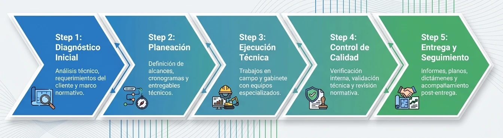

Nuestros Servicios Especializados
de Ingeniería y Construcción
Ofrecemos soluciones de infraestructura y construcción sostenible adaptadas tanto para la iniciativa privada como para iniciativas gubernamentales en la región.
Nuestra Metodología Estratégica

Gestión Integral de Residuos (Sólidos y Peligrosos)
Esta categoría agrupa el análisis técnico y la planeación operativa para todo tipo de desechos.
- check_circle Diagnóstico y Caracterización: Estudios de caracterización de residuos sólidos, diagnósticos y muestreo.
- check_circle Planes de Manejo: Elaboración de planes de manejo integral para residuos sólidos y peligrosos, incluyendo clasificación y seguimiento.
- check_circle Logística y Recolección:Estudio y optimización de rutas y métodos de recolección.
- check_circle Infraestructura:Proyectos para rellenos sanitarios, tratamiento de residuos orgánicos y obras para el manejo de residuos peligrosos.
Ingeniería Hídrica y Soluciones de Agua
Enfocada en la infraestructura y el aprovechamiento eficiente del recurso hídrico.
- check_circle Tratamiento de Aguas: Diseño, construcción y supervisión de plantas de tratamiento de aguas residuales.
- check_circle Sustentabilidad Hídrica: Sistemas alternativos de reciclaje o reutilización, programas de ahorro de agua y estudios técnicos de ahorro.
- check_circle Análisis Especializado: Estudios hidrometeorológicos para planeación y prevención.
Consultoría, Dictámenes y Cumplimiento Legal
Servicios clave para asegurar que las empresas cumplan con la normativa ambiental vigente.
- check_circle Evaluaciones de Impacto: Estudios de impacto ambiental (EsIA), diagnósticos y evaluaciones ambientales preventivas.
- check_circle Documentación Oficial: Elaboración de informes técnicos y dictámenes ambientales con validez legal.
Fortalecimiento de Capacidades
Servicios educativos para empresas o entidades gubernamentales.
- check_circle Capacitación: Cursos, talleres y programas de formación en temas ambientales.
¿Listo para comenzar tu próximo proyecto?
Legado Ambiental aporta décadas de experiencia colectiva a cada obra. Hablemos de tus requerimientos hoy mismo.